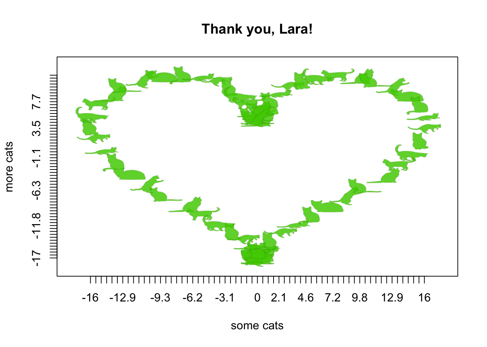

CatterPlot thank you note
Lara Harmon has put in countless hours to build and uplift the ASA Student community. We are SO grateful. We know she loves cats, as evidenced by
On the off-chance you have not felt judged by a cat today, my cat can help you out. pic.twitter.com/sApgbyYztD
— Lara Harmon (@Amstat_Lara) December 27, 2016
and
You'll notice that we have yet to be in a city where I can convince our design team cats would be 100% on-theme. /life goals
— Lara Harmon (@Amstat_Lara) January 24, 2017
and
Stats Cat's back from her first business trip. Looks about as jetlagged as I am! #JMM17 pic.twitter.com/JLzSbMKj3I
— Lara Harmon (@Amstat_Lara) January 10, 2017
so we decided to write her an appropriate thank you note, using CatterPlots.
If you haven’t installed this purrrrfect package, do the following:
devtools::install_github("Gibbsdavidl/CatterPlots")library('CatterPlots')Stack Overflow taught me how to plot a heart in R (perhaps they will be the subject of my next thank you note):
t=seq(0, 2*pi, by=0.1)
xhrt <- function(t) 16*sin(t)^3
yhrt <- function(t) 13*cos(t)-5*cos(2*t)-2*cos(3*t)-cos(4*t)
y=yhrt(t)
x=xhrt(t)Thank you, Lara! We appreciate you!
meow <- multicat(xs=x, ys=y,
cat=c(1,2,3,4,5,6,7,8,9,10),
catcolor=list(c(.31,.81,0,.85)),
canvas=c(-0.1,1.1, -0.1, 1.1),
xlab = "some cats",
ylab = "more cats",
main="Thank you, Lara!")

Currently excited about: observational study methods, translational research, BB-8